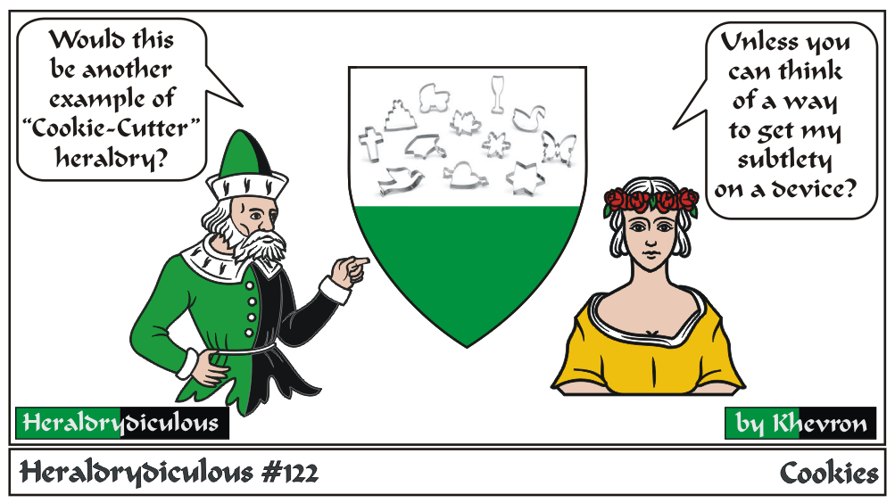

"Cookie Cutter" heraldry, largely a myth, is hard to define, but is basically when heraldic designs get into a rut and everyone's using the same field division, ordinary or charges, just different enough to pass,
While 'unique arms' is a good goal, many people go too far in the opposite direction, and insist on having bizarre and extremely unique arms,
where in period, most devices used common elements and were only slightly (less than one clear difference) different than another's.
The example above, of course, couldn't work due to having too many and different voided charges. Voided charges are now restricted to geometric shapes, though complex voided charges were registered in the distant past.
e-mail: 
Back to Khevron's Heraldry Page